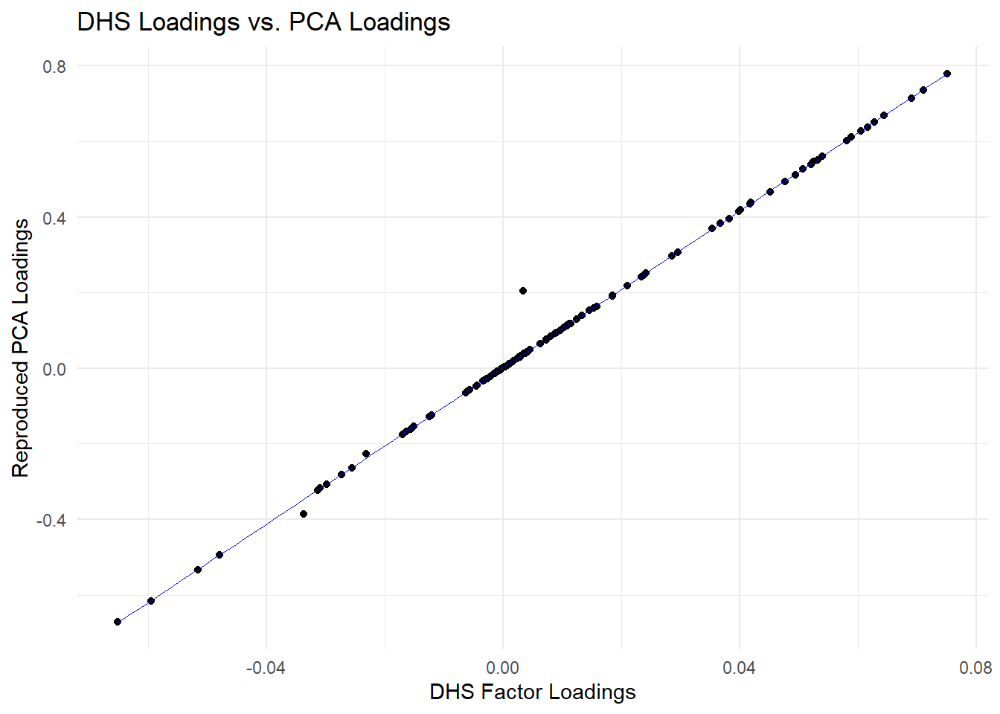
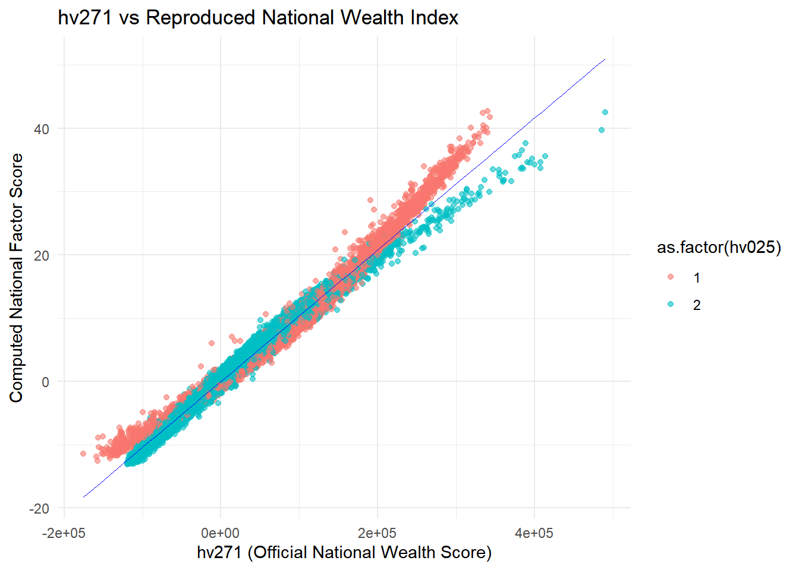
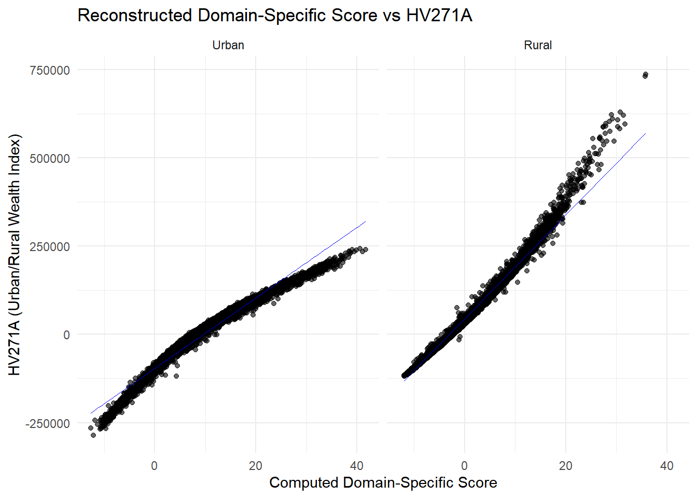
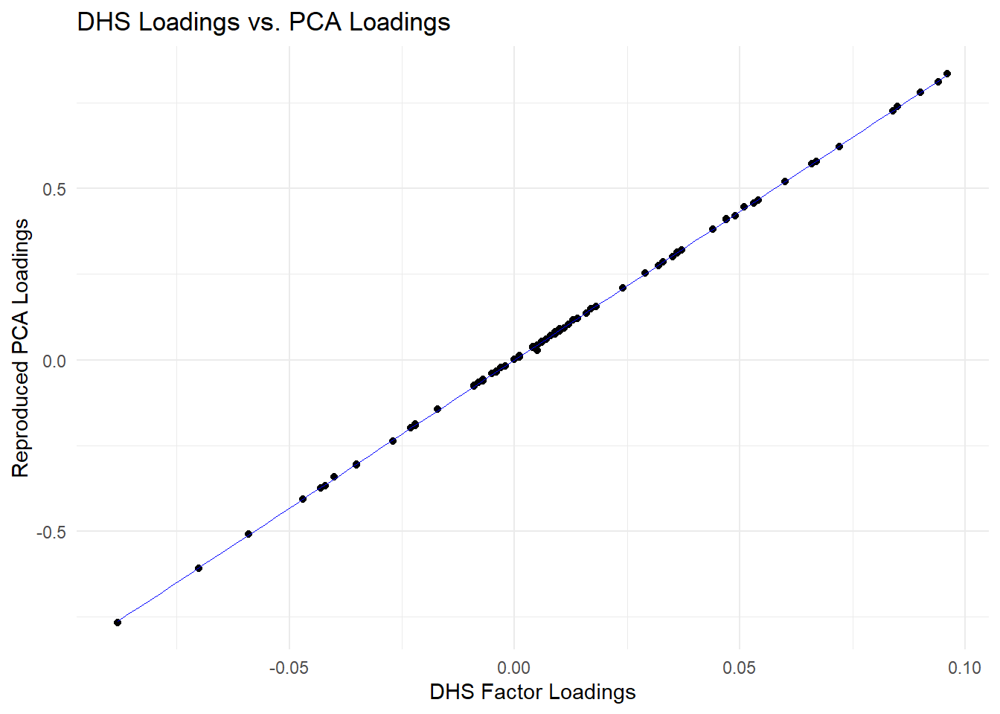
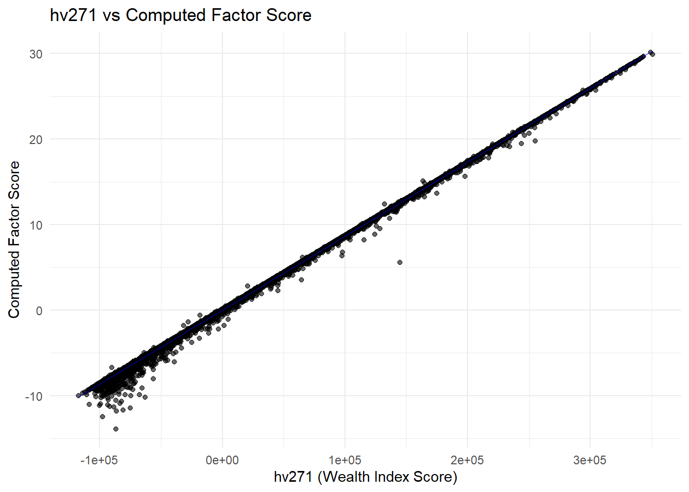
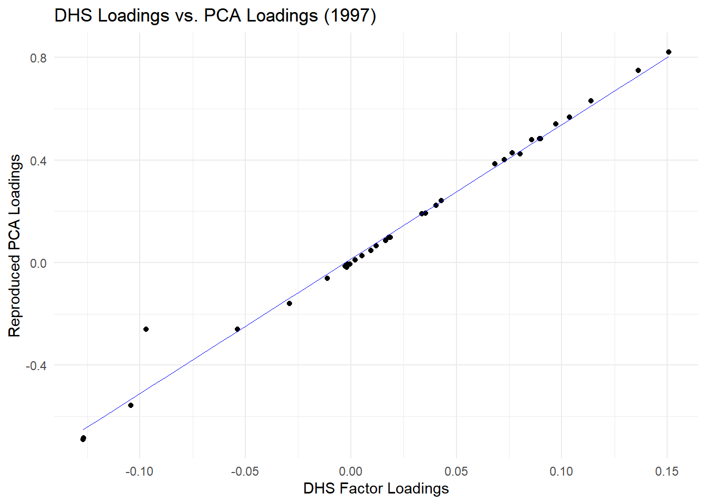

Code
# Load necessary libraries
library(tidyverse)
library(haven)
library(labelled)
library(psych)
library(readxl)This notebook documents the process of reconstructing and analyzing wealth indexes for a forthcoming study focusing on rural populations in Madagascar. Wealth indexes, particularly the wealth index factor scores, are critical for assessing household living standards and analyzing inequalities.
The wealth index, provided in Demographic and Health Surveys (DHS), is constructed using principal components analysis (PCA) on household characteristics such as asset ownership, housing materials, and access to water and sanitation facilities. However, differences in data availability across survey years pose challenges for longitudinal and rural-focused analyses.
Our objective is to ensure methodological consistency to compute rural-specific wealth indexes in earlier DHS datasets.
For DHS 2021, wealth-related variables include:
However, earlier surveys lack urban/rural disaggregation:
The DHS webpage on wealth index construction provides valuable supplementary information, including the SPSS code for the PCA analysis and the PCA loadings for each variable in the wealth index calculation. These loadings are helpful for validating our own calculations.
For DHS 1997 and DHS 2008, we aim to replicate the wealth index factor scores using the PCA methodology. To this end, we obtained the SPSS code used by DHS for constructing the wealth index. This code was adapted into R to align with current software practices and allow flexibility in modifying the process for rural-focused studies. However, the SPSS code was not fully explicit, particularly for earlier datasets such as DHS 1997, necessitating careful interpretation and reconstruction of the recoding operations.
We perform two things :
To do so, for each survey, we:
All the analysis are performed with R and appropriate libraries to process data (tidyverse?), handle spss datasets (haven?), managed labelled variables and values (labelled?), and perform PCA (psych?).
# Load necessary libraries
library(tidyverse)
library(haven)
library(labelled)
library(psych)
library(readxl)We begin this process with the DHS 2021 survey, for which both national and domain-specific wealth indexes (HV270, HV271, HV270A, HV271A) are available. This allows us to validate our approach by comparing reconstructed scores and loadings with those provided by DHS, before extending the methodology to earlier years
We begin by loading the household dataset for DHS 2021 and construct a dictionary of variables to assist with recoding. To replicate the DHS wealth index, we reproduce the transformations applied in the original SPSS script by defining helper functions to dichotomize categorical variables, handle shared sanitation facilities, categorize livestock ownership, and recode ownership of household and personal assets. These operations result in a harmonized dataset containing the same variables used in DHS’s PCA. Additional household characteristics—such as domestic worker presence and home ownership—are retrieved from the individual and men’s questionnaires and merged at the household level. Finally, we extract from the original DHS SPSS syntax the list of variables used in the PCA and remove those with zero variance before computing the first principal component, which serves as our proxy for the wealth index factor score.
# Load the data and build a dictionnary -----------------------------------
# Load DHS 2021 Data
hh_2021 <- read_dta("data/raw/dhs/DHS_2021/MDHR81DT/MDHR81FL.DTA")
# Filter valid households
hh_2021 <- hh_2021 %>%
filter(hv015 == 1)
# Build a variable dictionnary
cb_hh_2021 <- hh_2021 |>
look_for() |>
as_tibble()
# Helper function ---------------------------------------------------------
# Define function to dichotomize categorical variables
dichotomize <- function(data, var, condition, new_var, new_var_label) {
data %>%
mutate({{ new_var }} := if_else({{ condition }}, 1, 0, missing = 0)) %>%
labelled::set_variable_labels(!!rlang::ensym(new_var) := new_var_label) %>%
labelled::set_value_labels(!!rlang::ensym(new_var) := c("No" = 0, "Yes" = 1))
}
# Define a function that will reclassify if the toilet are shared
shared_fac <- function(data, var, new_var, new_var_label) {
data %>%
mutate(
{{ new_var }} := if_else(hv225 == 1 & {{ var }} == 1, 1, 0, missing = 0),
{{ var }} := if_else(hv225 == 1, 0, {{ var }}, missing = 0)
) %>%
labelled::set_variable_labels(!!rlang::ensym(new_var) := new_var_label) %>%
labelled::set_value_labels(!!rlang::ensym(new_var) := c("No" = 0, "Yes" = 1))
}
# Function to categorize livestock counts
categorize_livestock <- function(data, var, prefix, category_ranges, category_labels) {
# Ensure missing values and conditions are applied first
data <- data %>%
mutate(
{{ var }} := if_else(is.na({{ var }}) | hv246 != 1, 0, {{ var }})
)
# Create categorized dummy variables with the given prefix
for (i in seq_along(category_ranges)) {
new_var <- paste0(prefix, "_", i) # Custom prefix for output variable names
label <- category_labels[i]
data <- data %>%
mutate(
!!sym(new_var) := as.integer({{ var }} >= category_ranges[[i]][1] & {{ var }} <= category_ranges[[i]][2])
) %>%
set_variable_labels(!!sym(new_var) := label)
}
return(data)
}
# To mimic no2zero in DHS SPSS code (our values are already coded 0 and 1)
no2zero <- function(data, new_var, old_var, replace_na = TRUE) {
data %>%
rename({{ new_var }} := {{ old_var }}) %>%
mutate({{ new_var }} := if_else(replace_na & is.na({{ new_var }}), 0, {{ new_var }}))
}
# Dichotomization as per SPSS original script
# I rename the outputs to have the same as in:
# https://www.dhsprogram.com/programming/wealth%20index/Madagascar%20DHS%202021/Madagascar%20DHS%202021.sps.txt
test <- hh_2021 %>%
# Source of drinking water
dichotomize(hv201, hv201 == 11, QH101_11, "Source of drinking water: Eau du robinet dans le logement") %>%
dichotomize(hv201, hv201 == 12, QH101_12, "Source of drinking water: Eau du robinet dans la cour/Parcelle") %>%
dichotomize(hv201, hv201 == 13, QH101_13, "Source of drinking water: Eau du robinet du voisin") %>%
dichotomize(hv201, hv201 == 14, QH101_14, "Source of drinking water: Eau du robinet public/Borne fontaine") %>%
dichotomize(hv201, hv201 == 21, QH101_21, "Source of drinking water: Puits à pompe ou forage") %>%
dichotomize(hv201, hv201 == 31, QH101_31, "Source of drinking water: Puits creusés protégés") %>%
dichotomize(hv201, hv201 == 32, QH101_32, "Source of drinking water: Puits creusés non protégés") %>%
dichotomize(hv201, hv201 == 41, QH101_41, "Source of drinking water: Source protégée") %>%
dichotomize(hv201, hv201 == 42, QH101_42, "Source of drinking water: Source non protégée") %>%
dichotomize(hv201, hv201 == 51, QH101_51, "Source of drinking water: Eau de pluie") %>%
dichotomize(hv201, hv201 == 61, QH101_61, "Source of drinking water: Camion citerne") %>%
dichotomize(hv201, hv201 == 62, QH101_71, "Source of drinking water: Charette avec petite citerne/tonneau") %>%
dichotomize(hv201, hv201 == 43, QH101_81, "Source of drinking water: Eau de surface/Rivière/Barrage/Lac/Mare/Canal") %>%
dichotomize(hv201, hv201 == 71, QH101_91, "Source of drinking water: Eau en bouteille") %>%
dichotomize(hv201, hv201 == 96, QH101_96, "Source of drinking water: Autre") %>%
# Qui va chercher l'eau?
dichotomize(hv236, hv236 == 1, QH104A_1, "Qui va chercher l'eau: Femme adulte (>=15 ans)") %>%
dichotomize(hv236, hv236 == 2, QH104A_2, "Qui va chercher l'eau: Homme adulte (>=15 ans)") %>%
dichotomize(hv236, hv236 == 3, QH104A_3, "Qui va chercher l'eau: Fille (<15 ans)") %>%
dichotomize(hv236, hv236 == 4, QH104A_4, "Qui va chercher l'eau: Garçons (<15 ans)") %>%
# Type of toilet facility
dichotomize(hv205, hv205 == 11, QH109_11, "Type of toilet facility: Chasse d'eau - à un système d'égout") %>%
dichotomize(hv205, hv205 == 12, QH109_12, "Type of toilet facility: Chasse d'eau - à une fosse septique") %>%
dichotomize(hv205, hv205 == 13, QH109_13, "Type of toilet facility: Chasse d'eau - fosse d'aisance") %>%
dichotomize(hv205, hv205 == 14, QH109_14, "Type of toilet facility: Chasse d'eau - à quelque chose d'autre") %>%
dichotomize(hv205, hv205 == 15, QH109_15, "Type of toilet facility: Chasse d'eau - ne sait pas") %>%
dichotomize(hv205, hv205 == 21, QH109_21, "Type of toilet facility: Fosses/latrines - ventilées améliorées (VIP)") %>%
dichotomize(hv205, hv205 == 22, QH109_22, "Type of toilet facility: Fosses/latrines - avec dalles") %>%
dichotomize(hv205, hv205 == 23, QH109_23, "Type of toilet facility: Fosses/latrines - sans dalles/trou ouvert") %>%
dichotomize(hv205, hv205 == 41, QH109_31, "Type of toilet facility: Toilettes à compostage") %>%
dichotomize(hv205, hv205 == 42, QH109_41, "Type of toilet facility: Seau/tinette") %>%
dichotomize(hv205, hv205 == 43, QH109_51, "Type of toilet facility: Toilettes /latrines suspendues") %>%
dichotomize(hv205, hv205 == 31, QH109_61, "Type of toilet facility: Pas de toilette/nature") %>%
dichotomize(hv205, hv205 == 96, QH109_96, "Type of toilet facility: Autre") %>%
# Create shared toilet facility indicators
shared_fac(QH109_11, QH109_11_sh, "Type of toilet facility: Chasse d'eau - à un système d'égout - shared") %>%
shared_fac(QH109_12, QH109_12_sh, "Type of toilet facility: Chasse d'eau - à une fosse septique - shared") %>%
shared_fac(QH109_13, QH109_13_sh, "Type of toilet facility: Chasse d'eau - fosse d'aisance - shared") %>%
shared_fac(QH109_14, QH109_14_sh, "Type of toilet facility: Chasse d'eau - à quelque chose d'autre - shared") %>%
shared_fac(QH109_15, QH109_15_sh, "Type of toilet facility: Chasse d'eau - ne sait pas - shared") %>%
shared_fac(QH109_21, QH109_21_sh, "Type of toilet facility: Fosses/latrines - ventilées ameliorées (VIP) - shared") %>%
shared_fac(QH109_22, QH109_22_sh, "Type of toilet facility: Fosses/latrines - avec dalles - shared") %>%
shared_fac(QH109_23, QH109_23_sh, "Type of toilet facility: Fosses/latrines - sans dalles/trou ouvert - shared") %>%
shared_fac(QH109_31, QH109_31_sh, "Type of toilet facility: Toilettes à compostage - shared") %>%
shared_fac(QH109_41, QH109_41_sh, "Type of toilet facility: Seau/tinette - shared") %>%
shared_fac(QH109_51, QH109_51_sh, "Type of toilet facility: Toilettes /latrines suspendues - shared") %>%
shared_fac(QH109_96, QH109_96_sh, "Type of toilet facility: Autre - shared") %>%
# Type of cooking fuel
dichotomize(hv226, hv226 == 1, QH113_1, "Type of cooking fuel: Electricité") %>%
dichotomize(hv226, hv226 == 2, QH113_2, "Type of cooking fuel: Gaz propane liquifié (GPL)") %>%
dichotomize(hv226, hv226 == 3, QH113_3, "Type of cooking fuel: Gaz naturel") %>%
dichotomize(hv226, hv226 == 4, QH113_4, "Type of cooking fuel: Biogaz") %>%
dichotomize(hv226, hv226 == 5, QH113_5, "Type of cooking fuel: Kérosène/Petrole") %>%
dichotomize(hv226, hv226 == 6, QH113_6, "Type of cooking fuel: Charbon, lignite") %>%
dichotomize(hv226, hv226 == 7, QH113_7, "Type of cooking fuel: Charbon de bois") %>%
dichotomize(hv226, hv226 == 8, QH113_8, "Type of cooking fuel: Bois") %>%
dichotomize(hv226, hv226 == 9, QH113_9, "Type of cooking fuel: Paille/Branche/Herbes") %>%
dichotomize(hv226, hv226 == 10, QH113_10, "Type of cooking fuel: Résidus agricoles") %>%
# The commented-out SPSS variable (hv226=11) is skipped
dichotomize(hv226, hv226 == 95, QH113_95, "Type of cooking fuel: Pas de repas préparé dans le ménage") %>%
dichotomize(hv226, hv226 == 11 | hv226 == 96, QH113_96, "Type of cooking fuel: Autre/Bouse") %>%
# Cows/bulls
categorize_livestock(hv246b, "QH118A",
list(c(1,4), c(5,9), c(10,98)),
c("Cows/bulls: 1-4", "Cows/bulls: 5-9", "Cows/bulls: 10+")) %>%
# Zébus
categorize_livestock(hv246g, "QH118B",
list(c(1,4), c(5,9), c(10,98)),
c("Zébus: 1-4", "Zébus: 5-9", "Zébus: 10+")) %>%
# Horses/donkeys/mules
categorize_livestock(hv246c, "QH118C",
list(c(1,4), c(5,9), c(10,98)),
c("Horses/donkeys/mules: 1-4", "Horses/donkeys/mules: 5-9", "Horses/donkeys/mules: 10+")) %>%
# Goats
categorize_livestock(hv246d, "QH118D",
list(c(1,4), c(5,9), c(10,98)),
c("Goats: 1-4", "Goats: 5-9", "Goats: 10+")) %>%
# Sheep
categorize_livestock(hv246e, "QH118E",
list(c(1,4), c(5,9), c(10,98)),
c("Sheep: 1-4", "Sheep: 5-9", "Sheep: 10+")) %>%
# Chickens/poultry (different range)
categorize_livestock(hv246f, "QH118F",
list(c(1,9), c(10,29), c(30,98)),
c("Chickens or other poultry: 1-9", "Chickens or other poultry: 10-29", "Chickens or other poultry: 30+")) %>%
# Ducks/geese/turkeys
categorize_livestock(hv246h, "QH118G",
list(c(1,4), c(5,9), c(10,98)),
c("Canards/Oies/Dindes: 1-4", "Canards/Oies/Dindes: 5-9", "Canards/Oies/Dindes: 10+")) %>%
# Pigs
categorize_livestock(hv246i, "QH118H",
list(c(1,4), c(5,9), c(10,98)),
c("Cochons: 1-4", "Cochons: 5-9", "Cochons: 10+")) %>%
# Define land area
mutate(
landarea = hv245, # Assign hv245 to landarea
landarea = if_else(is.na(hv245) | hv245 >= 99.8, 99.9, landarea), # Set to 99.9 if missing or >= 99.8
landarea = if_else(is.na(hv244) | hv244 != 1, 0, landarea) # Set to 0 if QH119 is missing or not 1
) %>%
# Household assets
no2zero(QH121A, hv206) %>% # Electricity
no2zero(QH121B, hv207) %>% # Radio
no2zero(QH121C, hv208) %>% # Television
no2zero(QH121D, hv221) %>% # Telephone (non-mobile)
no2zero(QH121E, hv243e) %>% # Computer
no2zero(QH121F, hv209) %>% # Refrigerator
no2zero(QH121G, sh121g) %>% # Bed
no2zero(QH121H, sh121h) %>% # Table
no2zero(QH121I, sh121i) %>% # Chair
no2zero(QH121J, sh121j) %>% # Sofa
no2zero(QH121K, sh121k) %>% # Sewing machine
no2zero(QH121L, sh121l) %>% # Fan
no2zero(QH121M, sh121m) %>% # DVD player
no2zero(QH121N, sh121n) %>% # Water heater
# Personal assets
no2zero(QH122A, hv243b) %>% # Watch
no2zero(QH122B, hv243a) %>% # Mobile phone
no2zero(QH122C, hv210) %>% # Bicycle
no2zero(QH122D, hv211) %>% # Motorcycle or scooter
no2zero(QH122E, hv243c) %>% # Animal drawn cart
no2zero(QH122F, hv212) %>% # Car or truck
no2zero(QH122G, hv243d) %>% # Boat with motor
# Financial acces
no2zero(QH123, hv247) %>% # Has a bank account
# Main floor material
dichotomize(hv213, hv213 == 11, QH142_11, "Main floor material: Terre/sable") %>%
dichotomize(hv213, hv213 == 12, QH142_12, "Main floor material: Bouse") %>%
dichotomize(hv213, hv213 == 21, QH142_21, "Main floor material: Planches en bois") %>%
dichotomize(hv213, hv213 == 22, QH142_22, "Main floor material: Palmes/bambou") %>%
dichotomize(hv213, hv213 == 23, QH142_23, "Main floor material: Nattes") %>%
dichotomize(hv213, hv213 == 31, QH142_31, "Main floor material: Parquet ou bois ciré") %>%
dichotomize(hv213, hv213 == 32, QH142_32, "Main floor material: Bandes de vinyles/asphalte") %>%
dichotomize(hv213, hv213 == 33, QH142_33, "Main floor material: Carrelage") %>%
dichotomize(hv213, hv213 == 34, QH142_34, "Main floor material: Ciment") %>%
dichotomize(hv213, hv213 == 35, QH142_35, "Main floor material: Moquette") %>%
dichotomize(hv213, hv213 == 96, QH142_96, "Main floor material: Autre") %>%
# Main roof material
dichotomize(hv215, hv215 == 11, QH143_11, "Main roof material: Pas de toit") %>%
dichotomize(hv215, hv215 == 12, QH143_12, "Main roof material: Chaume/feuilles/herbes") %>%
dichotomize(hv215, hv215 == 13, QH143_13, "Main roof material: Mottes de terre") %>%
dichotomize(hv215, hv215 == 21, QH143_21, "Main roof material: Natte") %>%
dichotomize(hv215, hv215 == 22, QH143_22, "Main roof material: Palme/bambou") %>%
dichotomize(hv215, hv215 == 23, QH143_23, "Main roof material: Planches en bois") %>%
dichotomize(hv215, hv215 == 24, QH143_24, "Main roof material: Carton") %>%
dichotomize(hv215, hv215 == 31, QH143_31, "Main roof material: Tôle") %>%
dichotomize(hv215, hv215 == 32, QH143_32, "Main roof material: Bois") %>%
dichotomize(hv215, hv215 == 33, QH143_33, "Main roof material: Zinc/fibre de ciment") %>%
dichotomize(hv215, hv215 == 34, QH143_34, "Main roof material: Tuiles") %>%
dichotomize(hv215, hv215 == 35, QH143_35, "Main roof material: Ciment") %>%
dichotomize(hv215, hv215 == 36, QH143_36, "Main roof material: Shingles") %>%
dichotomize(hv215, hv215 == 96, QH143_96, "Main roof material: Autre") %>%
# Main wall material
dichotomize(hv214, hv214 == 11, QH144_11, "Main wall material: Pas de mur") %>%
dichotomize(hv214, hv214 == 12, QH144_12, "Main wall material: Bambou/Cane/Palme/Tronc") %>%
dichotomize(hv214, hv214 == 13, QH144_13, "Main wall material: Terre") %>%
dichotomize(hv214, hv214 == 21, QH144_21, "Main wall material: Bambou avec boue") %>%
dichotomize(hv214, hv214 == 22, QH144_22, "Main wall material: Pierres avec boue") %>%
dichotomize(hv214, hv214 == 23, QH144_23, "Main wall material: Adobe non recouvert") %>%
dichotomize(hv214, hv214 == 24, QH144_24, "Main wall material: Contre-Plaque") %>%
dichotomize(hv214, hv214 == 25, QH144_25, "Main wall material: Carton") %>%
dichotomize(hv214, hv214 == 26, QH144_26, "Main wall material: Bois de récupération") %>%
dichotomize(hv214, hv214 == 31, QH144_31, "Main wall material: Ciment") %>%
dichotomize(hv214, hv214 == 32, QH144_32, "Main wall material: Pierres avec chaux/ciment") %>%
dichotomize(hv214, hv214 == 33, QH144_33, "Main wall material: Briques") %>%
dichotomize(hv214, hv214 == 34, QH144_34, "Main wall material: Blocs de ciment") %>%
dichotomize(hv214, hv214 == 35, QH144_35, "Main wall material: Adobe recouvert") %>%
dichotomize(hv214, hv214 == 36, QH144_36, "Main wall material: Planches en bois/Shingles") %>%
dichotomize(hv214, hv214 == 37, QH144_37, "Main wall material: Tôle") %>%
dichotomize(hv214, hv214 == 96, QH144_96, "Main wall material: Autres") %>%
# Members sleeping
mutate(
hv216 = if_else(is.na(hv216) | hv216 == 0, hv012, hv216), # Replace hv216 if 0 or NA with hv012
memsleep = trunc(hv012 / hv216), # Ensure integer values
memsleep = if_else(is.na(hv216) | hv216 >= 99 | memsleep >= 98, NA_real_, memsleep) # Assign NA instead of 99
) %>%
set_variable_labels(memsleep = "Number of members per sleeping room") %>%
# Set rural / urban
mutate(
urban = as.integer(hv025 == 1), # Urban is 1 if hv025 == 1, else 0
rural = as.integer(hv025 == 2) # Rural is 1 if hv025 == 2, else 0
) %>%
# Recoding of 3 variables is not documented in DHS SPSS example, although they are used in the PCA
no2zero(LAND, hv244) # Owns land
# Load data for missing variables -----------------------------------------
# Some variables are built with other sources than Housheold
# We look in the individual recode
ir_2021 <- read_dta("data/raw/dhs/DHS_2021/MDIR81DT/MDIR81FL.DTA")
# Build a variable dictionnary
cb_ir_2021 <- ir_2021 |>
look_for() |>
as_tibble()
# We look in the men recode
mr_2021 <- read_dta("data/raw/dhs/DHS_2021/MDMR81DT/MDMR81FL.DTA")
cb_mr_2021 <- mr_2021 |>
look_for() |>
as_tibble()
# Compute DOMESTIC --------------------------------------------------------
# Possible alternative: v716 (husband/partner's occupation) == 91 (housekeeper)
# or
domestic_ir <- ir_2021 %>%
filter(v150 == 12) %>% # Ensure not related to household head
group_by(v001, v002) %>%
summarise(DOMESTIC_IR = as.integer(any(v717 == 6, na.rm = TRUE)),
.groups = "drop")
domestic_mr <- mr_2021 %>%
filter(mv150 == 12) %>% # Ensure not related to household head
group_by(mv001, mv002) %>%
summarise(DOMESTIC_MR = as.integer(any(mv717 == 6, na.rm = TRUE)),
.groups = "drop")
test2 <- test %>%
mutate(DOMESTIC = 0) %>%
left_join(domestic_ir, by = c("hv001" = "v001", "hv002" = "v002")) %>%
left_join(domestic_mr, by = c("hv001" = "mv001", "hv002" = "mv002")) %>%
mutate(
DOMESTIC = if_else(rowSums(select(., starts_with("DOMESTIC_")), na.rm = TRUE) > 0, 1, 0)
) %>%
select(-starts_with("DOMESTIC_"))
# mean(test2$DOMESTIC, na.rm = TRUE)
# [1] 0.007947343
# 0.00 reported in DHS excel table
# Compute HOUSE -----------------------------------------------------------
house_own_ir <- ir_2021 %>%
group_by(v001, v002) %>% # Group by household number
summarise(HOUSE_IR = as.integer(any(v745a > 0, na.rm = TRUE))) # If any member owns a house, set HOUSE = 1
house_own_mr <- mr_2021 %>%
group_by(mv001, mv002) %>% # Group by household number
summarise(HOUSE_MR = as.integer(any(mv745a > 0, na.rm = TRUE))) # If any member owns a house, set HOUSE = 1
test3 <- test2 %>%
left_join(house_own_ir , by = c("hv001" = "v001", "hv002" = "v002")) %>%
left_join(house_own_mr , by = c("hv001" = "mv001", "hv002" = "mv002")) %>%
mutate(
HOUSE = if_else(rowSums(select(., starts_with("HOUSE_")), na.rm = TRUE) > 0, 1, 0)
) %>%
select(-starts_with("HOUSE_"))
# mean(test3$HOUSE)
# [1] 0.5293515
# MEan reported in DHS : 0.54
# Compute PCA -------------------------------------------------------------
# A function to extract variable names from SPSS code provided by DHS
extract_variable_names <- function(file_path, line_range) {
read_lines(file_path) %>% # Read the entire file
.[line_range[1]:line_range[2]] %>% # Extract the specified line range
str_c(collapse = " ") %>% # Concatenate lines into a single string
str_split("\\s+") %>% # Split by whitespace
unlist() %>% # Convert list to a character vector
discard(~ .x == "") # Remove empty elements
}
# file path of the source file
dhs_spss_path <- "data/raw/dhs/DHS_wealth_index/Madagascar DHS 2021.sps.txt"
# variables listed in the PCA labeled "Test", from line 366 to 378
test_pca_vars <- extract_variable_names(dhs_spss_path, c(366, 378))
common_pca_vars <- extract_variable_names(dhs_spss_path, c(407, 415))
urban_pca_vars <- extract_variable_names(dhs_spss_path, c(445, 457))
rural_pca_vars <- extract_variable_names(dhs_spss_path, c(487, 499))
hh_2021_rec <- test3 %>%
mutate(across(all_of(common_pca_vars), ~ as.numeric(replace_na(., 0))))
# Remove zero-variance variables
zero_var_cols <- hh_2021_rec %>%
select(all_of(common_pca_vars)) %>%
summarise(across(everything(), ~ var(., na.rm = TRUE))) %>%
pivot_longer(everything(), names_to = "variable", values_to = "variance") %>%
filter(variance == 0) %>%
pull(variable)
common_pca_vars <- setdiff(common_pca_vars, zero_var_cols) # Exclude those variables
# Run PCA only on valid variables
pca_result_2021 <- principal(
cor(hh_2021_rec %>% select(all_of(common_pca_vars)), use = "pairwise.complete.obs"),
nfactors = 1, rotate = "none", scores = TRUE, covar = FALSE
)We first evaluate our ability to replicate the national wealth index (hv271) using a single, national-level PCA. We compare the component score coefficients published by DHS in their accompanying Excel file with the loadings obtained from our PCA on harmonized variables. This allows us to visually and statistically assess the consistency of our implementation.
file_path <- "data/raw/dhs/DHS_wealth_index/Madagascar DHS 2021_simplified.xlsx"
# Read the DHS PCA coefficients
common_pca <- read_excel(file_path, sheet = "Common")
# Extract variable names and descriptions
common_pca_clean <- common_pca %>%
mutate(
variable = str_extract(`Component Score Coefficient Matrix`, "^[^ ]+"),
description = str_remove(`Component Score Coefficient Matrix`, "^[^ ]+ ")
)
# Extract loadings from our R PCA
r_pca_loadings <- tibble(
variable = rownames(pca_result_2021$loadings),
r_pca_loading = pca_result_2021$loadings[, 1]
)
# Merge and compare
comparison <- common_pca_clean %>%
left_join(r_pca_loadings, by = "variable") %>%
select(variable, description, `DHS Factor Score` = `Component`, r_pca_loading)
# Plot the match between DHS and reproduced PCA loadings
ggplot(comparison, aes(x = as.numeric(`DHS Factor Score`), y = r_pca_loading)) +
geom_point() +
geom_smooth(method = "lm", color = "blue", se = FALSE, linewidth = 0.2) +
labs(
title = "DHS Loadings vs. PCA Loadings",
x = "DHS Factor Loadings",
y = "Reproduced PCA Loadings"
) +
theme_minimal()
# Correlation between published and reproduced PCA loadings
cor.test(as.numeric(comparison$`DHS Factor Score`), comparison$r_pca_loading)
Pearson's product-moment correlation
data: as.numeric(comparison$`DHS Factor Score`) and comparison$r_pca_loading
t = 191.43, df = 118, p-value < 2.2e-16
alternative hypothesis: true correlation is not equal to 0
95 percent confidence interval:
0.9976931 0.9988818
sample estimates:
cor
0.9983938 The plot and correlation results strongly support the accuracy of our implementation of the national PCA. The scatterplot shows an almost perfect linear alignment between the DHS-provided factor loadings and those we reproduced using the harmonized dataset. This is confirmed statistically by a Pearson correlation coefficient of 0.998, with a p-value < 2.2e-16, indicating an extremely high degree of agreement between the two sets of loadings. This near-perfect correlation suggests that our harmonization and PCA procedure closely replicates the methodology applied by DHS for constructing the national wealth index (hv271).
We then compute a household-level wealth score using this national PCA and compare it to the hv271 variable in the DHS dataset.
# Compute factor scores using national PCA
hh_2021_rec <- hh_2021_rec %>%
mutate(factor_score = as.vector(scale(select(., all_of(common_pca_vars))) %*% pca_result_2021$loadings[, 1]))
# Plot computed vs. official DHS national score
ggplot(hh_2021_rec, aes(x = hv271, y = factor_score, color = as.factor(hv025))) +
geom_point(alpha = 0.6) +
geom_smooth(method = "lm", color = "blue", se = FALSE, linewidth = 0.2) +
labs(
title = "hv271 vs Reproduced National Wealth Index",
x = "hv271 (Official National Wealth Score)",
y = "Computed National Factor Score"
) +
theme_minimal()
# Spearman correlation between computed and official national score
cor(hh_2021_rec$hv271, hh_2021_rec$factor_score, method = "spearman", use = "complete.obs")[1] 0.9939895The comparison between the official national wealth index (hv271) and our reconstructed factor score shows a strong positive association, both visually and statistically. The scatterplot indicates that the rank ordering of households is closely preserved, and the Spearman correlation coefficient of 0.994 suggests a very high level of concordance. While some minor deviations are visible—particularly at the distribution tails—these results support the conclusion that our implementation provides a reliable approximation of the national wealth index, suitable for rank-based analyses such as centile classification.
We now turn to the domain-specific PCA, in which we compute wealth scores separately for urban and rural households. This mirrors the DHS method used to construct the hv271a variable. We estimate the domain-specific PCA on each subsample, predict scores, and assess the correspondence with hv271a.
# Recompute dataset (replace NAs with 0)
hh_2021_rec <- test3 %>%
mutate(across(all_of(common_pca_vars), ~ as.numeric(replace_na(., 0))))
# Filter variables with variance
remove_zero_var <- function(data, var_list) {
zero_var_cols <- data %>%
select(all_of(var_list)) %>%
summarise(across(everything(), var, na.rm = TRUE)) %>%
pivot_longer(everything(), names_to = "variable", values_to = "variance") %>%
filter(variance == 0) %>%
pull(variable)
setdiff(var_list, zero_var_cols)
}
urban_pca_vars <- remove_zero_var(hh_2021_rec %>% filter(hv025 == 1),
urban_pca_vars)
rural_pca_vars <- remove_zero_var(hh_2021_rec %>% filter(hv025 == 2),
rural_pca_vars)
# PCA for urban and rural
pca_urban <- principal(cor(hh_2021_rec %>% filter(hv025 == 1) %>%
select(all_of(urban_pca_vars)),
use = "pairwise.complete.obs"),
nfactors = 1, rotate = "none")
pca_rural <- principal(cor(hh_2021_rec %>% filter(hv025 == 2) %>%
select(all_of(rural_pca_vars)),
use = "pairwise.complete.obs"),
nfactors = 1, rotate = "none")
# Compute scores
hh_2021_rec <- hh_2021_rec %>%
mutate(
urbscore = if_else(hv025 == 1,
as.vector(scale(select(., all_of(urban_pca_vars))) %*%
pca_urban$loadings[, 1]),
NA_real_),
rurscore = if_else(hv025 == 2,
as.vector(scale(select(., all_of(rural_pca_vars))) %*%
pca_rural$loadings[, 1]),
NA_real_),
domscor = case_when(
hv025 == 1 ~ urbscore,
hv025 == 2 ~ rurscore
)
)We finally compare the domain-specific score (domscor) to hv271a to assess the accuracy of our reconstruction:
# Scatterplot: domscor vs hv271a
ggplot(hh_2021_rec, aes(x = domscor, y = hv271a)) +
geom_point(alpha = 0.6) +
geom_smooth(method = "lm", color = "blue", se = FALSE, linewidth = 0.2) +
facet_wrap(~ hv025, labeller = labeller(hv025 = c("1" = "Urban", "2" = "Rural"))) +
labs(
title = "Reconstructed Domain-Specific Score vs HV271A",
x = "Computed Domain-Specific Score",
y = "HV271A (Urban/Rural Wealth Index)"
) +
theme_minimal()
# Spearman correlations
spearman_urban <- cor(
hh_2021_rec %>% filter(hv025 == 1) %>% pull(hv271a),
hh_2021_rec %>% filter(hv025 == 1) %>% pull(domscor),
method = "spearman", use = "complete.obs"
)
spearman_rural <- cor(
hh_2021_rec %>% filter(hv025 == 2) %>% pull(hv271a),
hh_2021_rec %>% filter(hv025 == 2) %>% pull(domscor),
method = "spearman", use = "complete.obs"
)
tibble(
domain = c("Urban", "Rural"),
spearman_dom_vs_HV271A = c(spearman_urban, spearman_rural)
)# A tibble: 2 × 2
domain spearman_dom_vs_HV271A
<chr> <dbl>
1 Urban 0.995
2 Rural 0.999We then assess the quality of our domain-specific PCA reconstruction by comparing our computed scores to the official DHS variable hv271a, which provides separate wealth indices for urban and rural areas. The scatterplots indicate a strong concordance across both domains, and the Spearman correlation coefficients—0.995 for urban households and 0.999 for rural ones—confirm that our domain-specific factor scores closely replicate the rank ordering captured in hv271a. Although minor non-linearities are visible, particularly in the upper ranges, these results suggest that our approach captures the intended within-domain variation with a high degree of fidelity.
The process involves several steps. First, we recode relevant variables from the DHS household dataset, ensuring that they aligned with the wealth index components, such as water sources, sanitation facilities, and household assets. Missing values were handled in the same way than DHS, by replacing them with either the variable mean for dichotomized variables or zero for animal husbandry-related variables.
Using the recoded data, we computed a correlation matrix for the selected variables and performed PCA to extract the first principal component, representing the wealth index factor. We then calculate factor scores for each household based on the PCA loadings.
Finally, we validated our approach by comparing the PCA loadings attributed to each PCA variable with those provided by DHS. We also compare the reconstructed scores for each household with the official DHS factor scores (hv271). We provide a graphical comparison as well as a correlation test.
# Load DHS Data (assuming already loaded as hh_2008)
hh_2008 <- read_dta("data/raw/dhs/DHS_2008/MDHR51DT/MDHR51FL.DTA")
# Filter valid households
hh_2008 <- hh_2008 %>%
filter(hv015 == 1)
hh_2008_rec <- hh_2008 %>%
mutate(
# water source
h2oires = if_else(hv201 == 11, 1, 0),
h2oyard = if_else(hv201 == 12, 1, 0),
h2opub = if_else(hv201 == 13, 1, 0),
h2owell = if_else(hv201 == 21, 1, 0),
h2opwell = if_else(hv201 == 31, 1, 0),
h2ouwell = if_else(hv201 == 32, 1, 0),
h2spring = if_else(hv201 %in% c(41, 42), 1, 0),
h2osurf = if_else(hv201 == 43, 1, 0),
h2ooth = if_else(hv201 > 50 & hv201 < 97, 1, 0),
# Toilet types
flushp = if_else((hv205 > 10 & hv205 < 15) & hv225 == 0, 1, 0),
flushs = if_else((hv205 > 10 & hv205 < 15) & hv225 == 1, 1, 0),
latvipp = if_else(hv205 == 21 & hv225 == 0, 1, 0),
latvips = if_else(hv205 == 21 & hv225 == 1, 1, 0),
latslbp = if_else(hv205 %in% c(22, 23) & hv225 == 0, 1, 0),
latslbs = if_else(hv205 %in% c(22, 23) & hv225 == 1, 1, 0),
latopp = if_else(hv205 == 24 & hv225 == 0, 1, 0),
latops = if_else(hv205 == 24 & hv225 == 1, 1, 0),
latbush = if_else(hv205 == 31, 1, 0),
latothp = if_else((hv205 > 40 & hv205 < 44) & hv225 == 0, 1, 0),
latoths = if_else((hv205 > 40 & hv205 < 44) & hv225 == 1, 1, 0),
# Amenities
electric = if_else(hv206 == 1, 1, 0),
radio = if_else(hv207 == 1, 1, 0),
tv = if_else(hv208 == 1, 1, 0),
fridge = if_else(hv209 == 1, 1, 0),
bicycle = if_else(hv210 == 1, 1, 0),
motobk = if_else(hv211 == 1, 1, 0),
car = if_else(hv212 == 1, 1, 0),
mphone = if_else(hv243a == 1, 1, 0),
watch = if_else(hv243b == 1, 1, 0),
bank = if_else(hv247 == 1, 1, 0),
# floor type variables
dirtfloo = if_else(hv213 %in% c(11, 12), 1, 0),
plnkfloo = if_else(hv213 == 21, 1, 0),
palmfloo = if_else(hv213 == 22, 1, 0),
matfloo = if_else(hv213 %in% c(23, 96), 1, 0),
parqfloo = if_else(hv213 == 31, 1, 0),
vinfloo = if_else(hv213 == 32, 1, 0),
tilefloo = if_else(hv213 == 33, 1, 0),
cemtfloo = if_else(hv213 == 34, 1, 0),
carpfloo = if_else(hv213 == 35, 1, 0),
# Cooking fuel
cookelec = if_else(hv226 == 1, 1, 0),
cooklpg = if_else(hv226 %in% c(2, 3, 4, 5), 1, 0),
cookcoal = if_else(hv226 %in% c(6, 7), 1, 0),
cookwood = if_else(hv226 == 8, 1, 0),
cookstrw = if_else(hv226 %in% c(9, 10, 11), 1, 0),
cooknone = if_else(hv226 %in% c(95, 96), 1, 0),
#wall materials
grnwall = if_else(hv214 == 12, 1, 0),
dirtwall = if_else(hv214 %in% c(11, 13), 1, 0),
bamwall = if_else(hv214 %in% c(21, 22), 1, 0),
rwdwall = if_else(hv214 %in% c(23, 24, 25, 26), 1, 0),
cmtwall = if_else(hv214 == 31, 1, 0),
stncwall = if_else(hv214 == 32, 1, 0),
brckwall = if_else(hv214 == 33, 1, 0),
blckwall = if_else(hv214 == 34, 1, 0),
woodwall = if_else(hv214 == 36, 1, 0),
othwall = if_else(hv214 == 96, 1, 0),
# roofing materials
natroof = if_else(hv215 %in% c(11, 12), 1, 0),
sodroof = if_else(hv215 == 13, 1, 0),
rudroof = if_else(hv215 %in% c(21, 22, 24), 1, 0),
plnkroof = if_else(hv215 == 23, 1, 0),
ironroof = if_else(hv215 %in% c(31, 95, 96), 1, 0),
woodroof = if_else(hv215 == 32, 1, 0),
cemtroof = if_else(hv215 %in% c(33, 35, 36), 1, 0),
tileroof = if_else(hv215 == 34, 1, 0),
# Handle missing values for hv216 and compute members per sleeping room
hv216 = if_else(is.na(hv216)|hv216 == 0, hv012, hv216),
memsleep = hv012 / hv216,
# pondération
hhmemwt = hv005 / 1000000 * hv012,
wt = hv005 / 1000000
)
# Store variable names for reuse
dich_vars_2008 <- c(
"h2oires", "h2oyard", "h2opub", "h2owell", "h2opwell", "h2ouwell",
"h2spring", "h2osurf", "h2ooth", "flushp", "flushs", "latvipp", "latvips",
"latslbp", "latslbs", "latopp", "latops", "latbush", "latothp", "latoths",
"electric", "radio", "tv", "fridge", "bicycle", "motobk", "car", "mphone",
"watch", "bank", "memsleep", "dirtfloo", "plnkfloo", "palmfloo", "matfloo",
"parqfloo", "vinfloo", "tilefloo", "cemtfloo", "carpfloo", "cookelec",
"cooklpg", "cookcoal", "cookwood", "cookstrw", "cooknone", "grnwall",
"dirtwall", "bamwall", "rwdwall", "cmtwall", "stncwall", "brckwall",
"blckwall", "woodwall", "othwall", "natroof", "sodroof", "rudroof",
"plnkroof", "ironroof", "woodroof", "cemtroof", "tileroof"
)
animal_husbandry_vars <- c(
"hv246a", "hv246b", "hv246c", "hv246d", "hv246e", "hv246f", "hv246g", "hv246h"
)
all_factor_vars_2008 <- c(dich_vars_2008 , animal_husbandry_vars)
# Perform PCA
perform_pca <- function(data, vars) {
cor_matrix <- cor(data %>% select(all_of(vars)), use = "complete.obs")
principal(cor_matrix, nfactors = 1, rotate = "none", scores = TRUE, covar = FALSE)
}
pca_result <- perform_pca(hh_2008_rec, c(dich_vars_2008, animal_husbandry_vars))
# Extract PCA loadings and compute factor scores
hh_2008_rec <- hh_2008_rec %>%
mutate(
factor_score = as.vector(scale(hh_2008_rec %>% select(all_of(dich_vars_2008), all_of(animal_husbandry_vars))) %*% pca_result$loadings[, 1])
)
# Comparison and Visualization
comparison <- tibble(
variable = paste0("Var", seq_along(pca_result$loadings[, 1])), # Replace with actual names if needed
dhs_factor_score = c(0.051, 0.036, 0.044, 0.001, 0.006, -0.023, -0.027, -0.040, -0.004,
0.049, 0.024, 0.005, 0.010, 0.012, 0.018, 0.011, 0.033, -0.070,
0.004, 0.010, 0.096, 0.053, 0.094, 0.060, 0.035, 0.036, 0.047,
0.090, 0.072, 0.067, -0.035, -0.022, 0.009, -0.022, -0.059,
0.037, 0.004, 0.032, 0.066, 0.007, 0.016, 0.029, 0.084, -0.088,
-0.002, 0.001, -0.035, -0.042, -0.017, 0.006, 0.047, 0.013,
0.054, 0.014, 0.009, 0.008, -0.047, -0.043, -0.008, -0.007,
0.085, -0.005, 0.009, 0.017, -0.017, -0.004, 0.000, -0.009,
-0.009, -0.007, -0.003, 0.005), # SPSS values
r_pca_loading = pca_result$loadings[, 1]
)
# Plot: DHS Loadings vs PCA Loadings
ggplot(comparison, aes(x = dhs_factor_score, y = r_pca_loading)) +
geom_point() +
geom_smooth(method = "lm", color = "blue", se = FALSE, linewidth = 0.2) +
labs(
title = "DHS Loadings vs. PCA Loadings",
x = "DHS Factor Loadings",
y = "Reproduced PCA Loadings"
) +
theme_minimal()
The graph compares the PCA loadings corresponding to each variable that we obtained from our calculations with the PCA loadings published by DHS on the webpage dedicated to wealth indexes for the Madagascar 2008 survey. Each point represents a variable included in the wealth index calculation, with the x-axis showing the official DHS-reported loadings and the y-axis showing the reproduced loadings. The near-perfect alignment indicates a very high consistency between the two sets of loadings, demonstrating that our reconstruction closely replicates the official DHS calculations. We now compute a correlation test to assess the correspondance.
# Correlation and visualization
corr_2008_loadings <- cor.test(comparison$dhs_factor_score, comparison$r_pca_loading)
corr_2008_loadings
Pearson's product-moment correlation
data: comparison$dhs_factor_score and comparison$r_pca_loading
t = 886.51, df = 70, p-value < 2.2e-16
alternative hypothesis: true correlation is not equal to 0
95 percent confidence interval:
0.9999286 0.9999722
sample estimates:
cor
0.9999555 The Pearson correlation between the DHS-published PCA loadings and our reproduced loadings is nearly perfect at 0.99996, with a p-value less than 2.2e-16, confirming the almost perfect correspondence between the two.
Next, we extend the verification to the observation level by comparing the factor scores generated through our procedure with the wealth index scores (hv271) provided in the DHS dataset.
# Plot: hv271 vs Factor Score
ggplot(hh_2008_rec, aes(x = hv271, y = factor_score)) +
geom_point(alpha = 0.6) +
geom_smooth(method = "lm", color = "blue", se = FALSE, linewidth = 0.2) +
labs(
title = "hv271 vs Computed Factor Score",
x = "hv271 (Wealth Index Score)",
y = "Computed Factor Score"
) +
theme_minimal()
his graph compares the wealth index scores provided in the DHS dataset (hv271) with the factor scores computed through our reconstructed PCA process for the Madagascar 2008 survey. Each point represents a household, with the x-axis showing the DHS wealth index scores and the y-axis displaying the reproduced factor scores. The near-perfect alignment along the regression line demonstrates a very high agreement between the two scores, suggesting that our calculation method effectively replicates the wealth index values at the household level.
We perform a correlation test to quantify the relationship between the DHS wealth index scores (hv271) and the computed factor scores.
# Perform a correlation test between hv271 and factor_score
corr_2008_obs <- cor.test(hh_2008_rec$hv271, hh_2008_rec$factor_score,
method = "spearman", use = "complete.obs")
corr_2008_obs
Spearman's rank correlation rho
data: hh_2008_rec$hv271 and hh_2008_rec$factor_score
S = 1996791089, p-value < 2.2e-16
alternative hypothesis: true rho is not equal to 0
sample estimates:
rho
0.9978959 The Spearman rank correlation between the official DHS wealth index score (hv271) and our reconstructed factor score for 2008 is very high (ρ = 0.998), suggesting a near-monotonic relationship between the two. Despite tied ranks in the data—common in categorical or discretized variables—the result indicates that our PCA-based replication closely approximates the household ranking used in the DHS wealth index. While this does not imply exact agreement in scale or distribution, it supports the use of the reconstructed score as a valid proxy for household wealth ordering.
We now turn to reconstructing the domain-specific wealth scores (hv271a), which DHS computes separately for urban and rural households using different sets of variables. To replicate this approach, we split the dataset by urban/rural status (hv025), filtered out variables with zero variance within each subgroup, and performed separate principal component analyses (PCA) for urban and rural samples. Using the resulting loadings, we computed domain-specific scores for each household (domscor), then rescaled these scores through linear transformation to approximate the scale of the DHS-provided hv271a variable. We assessed the accuracy of our reconstruction by comparing domscor with hv271a graphically and using Spearman correlation, providing an indication of how well our method reproduces the within-domain household rankings used in the original DHS analysis.
# Ensure missing values are handled consistently
hh_2008_rec <- hh_2008_rec %>%
mutate(across(all_of(animal_husbandry_vars), ~ if_else(is.na(.) | hv246 != 1, 0, .))) %>%
mutate(across(all_of(dich_vars_2008), ~ replace_na(., 0)))
# Function to remove zero-variance variables
remove_zero_var <- function(data, var_list) {
zero_vars <- data %>%
select(all_of(var_list)) %>%
summarise(across(everything(), ~ var(., na.rm = TRUE))) %>%
pivot_longer(everything(), names_to = "variable", values_to = "variance") %>%
filter(variance == 0) %>%
pull(variable)
setdiff(var_list, zero_vars)
}
# Identify valid variables separately for urban and rural
urban_vars <- remove_zero_var(hh_2008_rec %>% filter(hv025 == 1), all_factor_vars_2008)
rural_vars <- remove_zero_var(hh_2008_rec %>% filter(hv025 == 2), all_factor_vars_2008)
# Run PCA
pca_urban_2008 <- perform_pca(hh_2008_rec %>% filter(hv025 == 1), urban_vars)
pca_rural_2008 <- perform_pca(hh_2008_rec %>% filter(hv025 == 2), rural_vars)
# Compute raw scores
hh_2008_rec <- hh_2008_rec %>%
mutate(
urbscore = if_else(hv025 == 1,
as.vector(scale(select(., all_of(urban_vars))) %*% pca_urban_2008$loadings[, 1]),
NA_real_),
rurscore = if_else(hv025 == 2,
as.vector(scale(select(., all_of(rural_vars))) %*% pca_rural_2008$loadings[, 1]),
NA_real_)
)
# Combine domain-specific scores
hh_2008_rec <- hh_2008_rec %>%
mutate(
domscor = case_when(
hv025 == 1 ~ urbscore,
hv025 == 2 ~ rurscore
)
)
# Keep only household IDs and domain-specific score
hh_2008_hv271a <- hh_2008_rec %>%
select(hv001, hv002, hv271a = domscor)
# Save for later use
write_rds(hh_2008_hv271a, "data/derived/hh_2008_hv271a.rds")To extend the DHS 2008 analysis with a domain-specific wealth index, we computed separate PCA scores for urban and rural households, based on the subset of variables used by DHS in their original index construction. We then assigned to each household a domain-specific wealth score (hv271a) using the appropriate urban or rural PCA loadings. In order to facilitate later merging with other household-level data, we retained only the unique household identifiers (hv001, hv002) along with the computed score. The resulting dataset was saved as an .rds file in the data/derived/ directory for use in downstream analyses.
We apply a similar approach for 1997, considering that the DHS program included fewer variables in the computations. The recoding procedures for these variables are not provided and we figured out the procedure by analysing the recoded variable labels and the content of the 1997 questionnaire.
hh_1997 <- read_dta("data/raw/dhs/DHS_1997/MDHR31DT/MDHR31FL.DTA")
hh_1997_rec <- hh_1997 %>%
mutate(
# Specific to 1997 ---------------------
# Toilet types (latbush below)
fown = if_else((hv205 == 10 | hv205 == 11), 1, 0),
latpit = if_else((hv205 == 20 | hv205 == 21), 1, 0),
latvip = if_else(hv205 == 22, 1, 0),
latother = if_else(hv205 == 96, 1, 0),
latbush = if_else(hv205 == 31, 1, 0),
# Phone
phone = if_else(hv221 == 1, 1, 0),
# Same as 2008 ------------------------
# water source
h2oires = if_else(hv201 == 11, 1, 0), # "If piped drinking water in residence"
h2oiwell = if_else(hv201 == 22, 1, 0), # "If has a well in residence"
h2osurf = if_else(hv201 %in% c(31, 32, 33, 34), 1, 0), # "If uses river, canal or surface water for drinking"
h2ooth = if_else(hv201 > 51, 1, 0), # "Other source of drinking water"
h2ocessi = if_else(hv201 == 23, 1, 0), # "If gets water from an open well/hole/cesspool in residence"
h2orain = if_else(hv201 == 41, 1, 0), # "If rain for drinking water"
h2opub = if_else(hv201 == 13, 1, 0), # "If uses a public faucet (piped)"
h2ocesso = if_else(hv201 == 26, 1, 0), # "If gets water from open well/hole/cesspool outside residence"
h2oores = if_else(hv201 == 12, 1, 0), # "If has piped water outside residence"
h2bores = if_else(hv201 == 21, 1, 0), # "If has borehole with pump in residence"
h2oboout = if_else(hv201 == 24, 1, 0), # "If has borehole with pump outside of residence"
h2oowell = if_else(hv201 == 25, 1, 0), # "If has well outside of residence"
h2otruck = if_else(hv201 == 51, 1, 0),# "If gets water from a tanker truck"
# Amenities
electric = if_else(hv206 == 1, 1, 0),
radio = if_else(hv207 == 1, 1, 0),
tv = if_else(hv208 == 1, 1, 0),
fridge = if_else(hv209 == 1, 1, 0),
bicycle = if_else(hv210 == 1, 1, 0),
motobk = if_else(hv211 == 1, 1, 0),
car = if_else(hv212 == 1, 1, 0),
# floor type variables
dirtfloo = if_else(hv213 %in% c(11, 12), 1, 0),
woodfloo = if_else(hv213 == 21, 1, 0),
palmfloo = if_else(hv213 == 22, 1, 0),
parqfloo = if_else(hv213 == 31, 1, 0),
vinfloo = if_else(hv213 == 32, 1, 0),
tilefloo = if_else(hv213 == 33, 1, 0),
cemtfloo = if_else(hv213 == 34, 1, 0),
carpfloo = if_else(hv213 == 35, 1, 0),
othfloor = if_else(hv213 == 96, 1, 0),
# Handle missing values for hv216 and compute members per sleeping room
hv216 = if_else(is.na(hv216)|hv216 == 0, hv012, hv216),
memsleep = hv012 / hv216,
# pondération
hhmemwt = hv005 / 1000000 * hv012,
wt = hv005 / 1000000
)
# Compute ownland variable
ir_1997 <- read_dta("data/raw/dhs/DHS_1997/MDIR31DT/MDIR31FL.DTA")
# Compute ownland variable for households
ownland_by_household <- ir_1997 %>%
select(v001, v002, own_land_partner = v707, own_land_respondent = v740) %>%
mutate(
# Convert to binary (1 if owns land personally or by family, 0 otherwise)
own_land_partner = if_else(own_land_partner %in% c(1, 2), 1, 0, missing = 0),
own_land_respondent = if_else(own_land_respondent %in% c(1, 2), 1, 0, missing = 0),
own_any_land = own_land_partner + own_land_respondent) %>%
group_by(v001, v002) %>%
summarise(ownland = sum(own_any_land, na.rm = TRUE)) %>%
ungroup() %>%
mutate(ownland = ifelse(ownland > 0, 1, 0))
# Add ownland variable to hh_1997 by joining on hv001 and hv002
hh_1997_rec <- hh_1997_rec %>%
left_join(ownland_by_household, by = c("hv001" = "v001", "hv002" = "v002"))
# Check number of unmatched (we do not have data for all hh)
sum(is.na(hh_1997_rec$ownland))[1] 1622# 1622
# Replace NA in ownland with 0 (if household doesn't have any matching members)
hh_1997_rec <- hh_1997_rec %>%
mutate(ownland = if_else(is.na(ownland), 0, ownland))
# Define the equivalent variables for 1997 based on SPSS specification and recoded names
pca_loading_dhs <- tibble::tribble(
~code, ~variable, ~dhs_factor,
"electric", "Has electricity", 0.15080,
"radio", "Has radio", 0.10360,
"tv", "Has television", 0.13631,
"fridge", "Has refrigerator", 0.08574,
"bicycle", "Has bicycle", 0.04035,
"motobk", "Has motorcycle", 0.04297,
"car", "Has car", 0.07643,
"phone", "Has telephone", 0.06839,
"ownland", "If household works own or family's agric. land", -0.09713,
"memsleep", "Number of members per sleeping room", -0.05370,
"h2oires", "If piped drinking water in residence", 0.11394,
"h2oiwell", "If has a well in residence", 0.01202,
"h2osurf", "If uses river, canal or surface water for drinking", -0.10437,
"h2ooth", "Other source of drinking water", -0.00177,
"fown", "If uses own flush toilet", 0.09723,
"h2ocessi", "Water from open well/hole/cesspool in residence", 0.00524,
"latbush", "If uses bush,field as latrine", -0.12692,
"latother", "If other type of latrine", 0.00208,
"dirtfloo", "If has dirt, sand, dung as floor in dwelling", -0.00042,
"woodfloo", "If has wood, plank principal floor in dwelling", 0.03547,
"cemtfloo", "If has cement principal floor", 0.08999,
"othfloor", "If has other type of flooring", -0.00141,
"h2orain", "If rain for drinking water", -0.00163,
"h2opub", "If uses a public faucet (piped)", 0.08025,
"h2ocesso", "Water from open well/hole/cesspool outside", -0.02915,
"latpit", "If uses a traditional pit toilet", 0.08954,
"latvip", "If uses a VIP latrine", 0.00948,
"parqfloo", "If has parquet or polished wood floors", 0.07280,
"tilefloo", "If has tiles for main flooring material", 0.03367,
"palmfloo", "If has palm or bamboo for floor materials", -0.12683,
"carpfloo", "If has carpeted flooring", 0.01799,
"h2oores", "If has piped water outside residence", 0.01861,
"h2bores", "If has borehole with pump in residence", 0.01642,
"h2oboout", "If has borehole with pump outside of residence", -0.01110,
"h2oowell", "If has well outside of residence", -0.00205,
"h2otruck", "If gets water from a tanker truck", -0.00265
)
all_factor_vars_1997 <- pca_loading_dhs$code
# Replace missing values
hh_1997_rec <- hh_1997_rec %>%
mutate(across(all_of(all_factor_vars_1997),
~ if_else(is.na(.), mean(., na.rm = TRUE), .)))
# Perform PCA
pca_result_1997 <- perform_pca(hh_1997_rec, all_factor_vars_1997)
# Add factor scores to the dataset
hh_1997_rec <- hh_1997_rec %>%
mutate(
factor_score = as.vector(scale(hh_1997_rec %>%
select(all_of(all_factor_vars_1997))) %*%
pca_result_1997$loadings[, 1]))
# Create a tibble for DHS scores and R PCA loadings
r_pca_loadings <- tibble(
code = rownames(pca_result_1997$loadings),
r_pca_loading = as.vector(pca_result_1997$loadings[, 1])
)
# Join the tibbles and calculate differences
comparison <- left_join(pca_loading_dhs, r_pca_loadings, by = "code") %>%
mutate(difference = r_pca_loading - dhs_factor)
# Plot 1: DHS Loadings vs PCA Loadings
ggplot(comparison, aes(x = dhs_factor, y = r_pca_loading)) +
geom_point() +
geom_smooth(method = "lm", color = "blue", se = FALSE, linewidth = 0.2) +
labs(
title = "DHS Loadings vs. PCA Loadings (1997)",
x = "DHS Factor Loadings",
y = "Reproduced PCA Loadings"
) +
theme_minimal()
The graph compares the PCA loadings provided by DHS with the reproduced loadings generated through our reconstruction of the wealth index for the 1997 Madagascar survey. Each point represents a variable used in the wealth index calculation, with the x-axis displaying the DHS-provided loadings and the y-axis showing the reproduced loadings. The alignment of points along the regression line indicates a very strong correspondence between the two sets of loadings, validating our reconstruction methodology.
# Calculate and print the correlation
correlation <- cor.test(comparison$dhs_factor, comparison$r_pca_loading, use = "complete.obs")
print(correlation)The correlation test confirms the strong relationship between the DHS-provided PCA loadings and our reproduced loadings, with a correlation coefficient of 0.9929. The extremely small p-value (< 2.2e-16) indicates that this correspondence is statistically significant.
We compute both a national and a domain-specific wealth index for the 1997 DHS dataset. Since DHS did not publish official wealth scores for this round, we generate a synthetic index following the same methodology: we perform PCA on recoded household-level variables and retain the first component as the national wealth index (saved under hv271). We also replicate the DHS practice of estimating separate scores for urban and rural households, applying PCA separately to each group and combining the resulting scores into a domain-specific index (saved under hv271a).
# Ensure missing values are handled for all relevant variables
hh_1997_rec <- hh_1997_rec %>%
mutate(across(all_of(all_factor_vars_1997), ~ if_else(is.na(.), mean(., na.rm = TRUE), .)))
# Remove zero-variance variables by domain
urban_vars_1997 <- remove_zero_var(hh_1997_rec %>% filter(hv025 == 1), all_factor_vars_1997)
rural_vars_1997 <- remove_zero_var(hh_1997_rec %>% filter(hv025 == 2), all_factor_vars_1997)
# PCA per domain
pca_urban_1997 <- perform_pca(hh_1997_rec %>% filter(hv025 == 1), urban_vars_1997)
pca_rural_1997 <- perform_pca(hh_1997_rec %>% filter(hv025 == 2), rural_vars_1997)
# Domain-specific raw scores
hh_1997_rec <- hh_1997_rec %>%
mutate(
urbscore = if_else(hv025 == 1,
as.vector(scale(select(., all_of(urban_vars_1997))) %*% pca_urban_1997$loadings[, 1]),
NA_real_),
rurscore = if_else(hv025 == 2,
as.vector(scale(select(., all_of(rural_vars_1997))) %*% pca_rural_1997$loadings[, 1]),
NA_real_)
)
# Compute final scores
hh_1997_rec <- hh_1997_rec %>%
mutate(
hv271 = as.vector(scale(select(., all_of(all_factor_vars_1997))) %*% pca_result_1997$loadings[, 1]), # common
hv271a = case_when(
hv025 == 1 ~ urbscore,
hv025 == 2 ~ rurscore
) # domain-specific
)
# Keep only identifiers and the two wealth indices
hh_1997_pca_scores <- hh_1997_rec %>%
select(hv001, hv002, hv271, hv271a)
# Save to file
write_rds(hh_1997_pca_scores, "data/derived/hh_1997_hv271_hv271a.rds")These results confirm the reliability of our methodology in replicating the wealth index calculations for the DHS 1997 and 2008 surveys. We will be able to use these to compute wealth scores dedicated to the rural areas, equivalent to HV270A and HV271A.